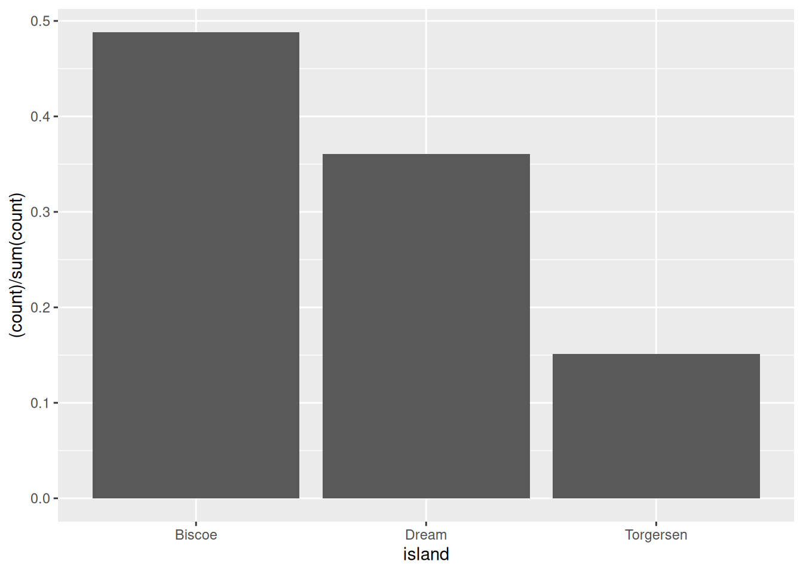
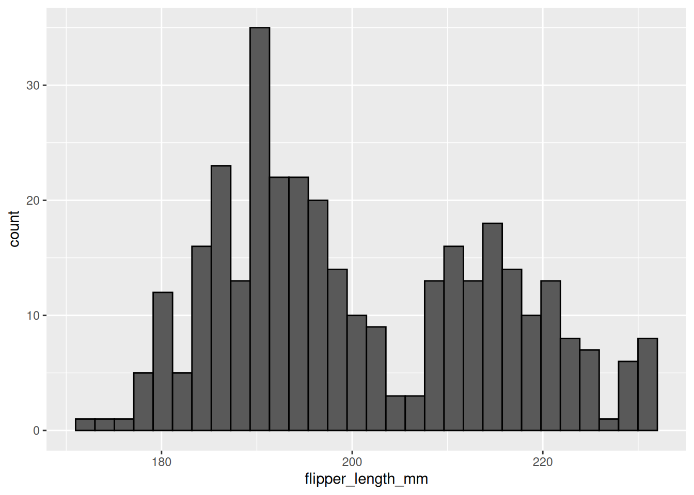
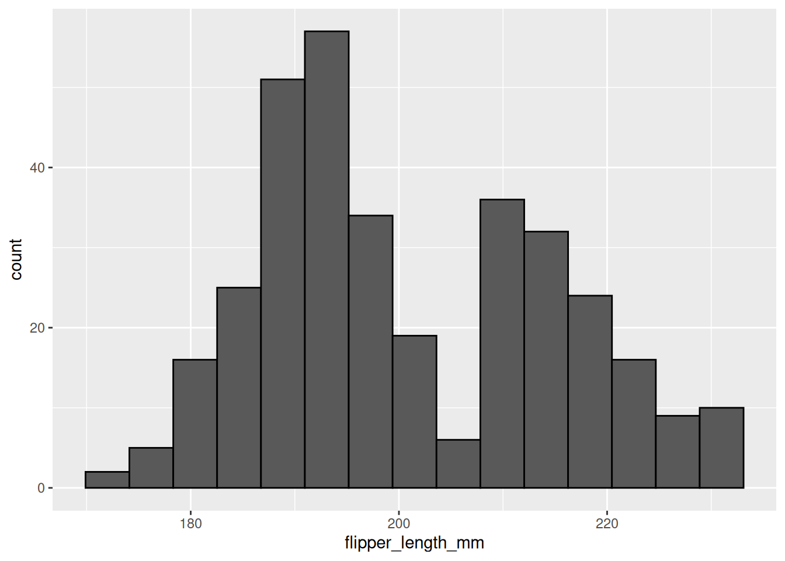
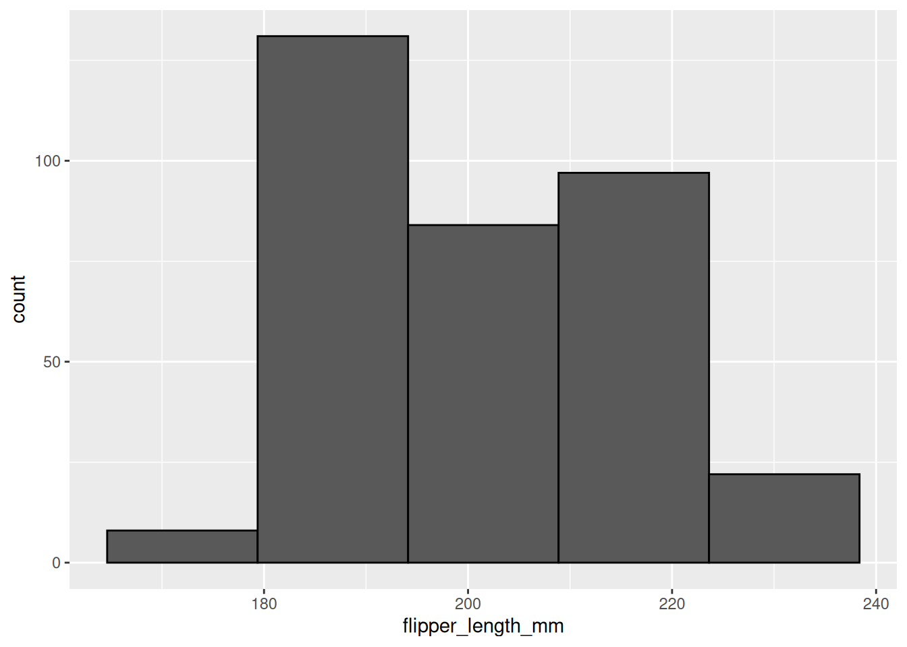
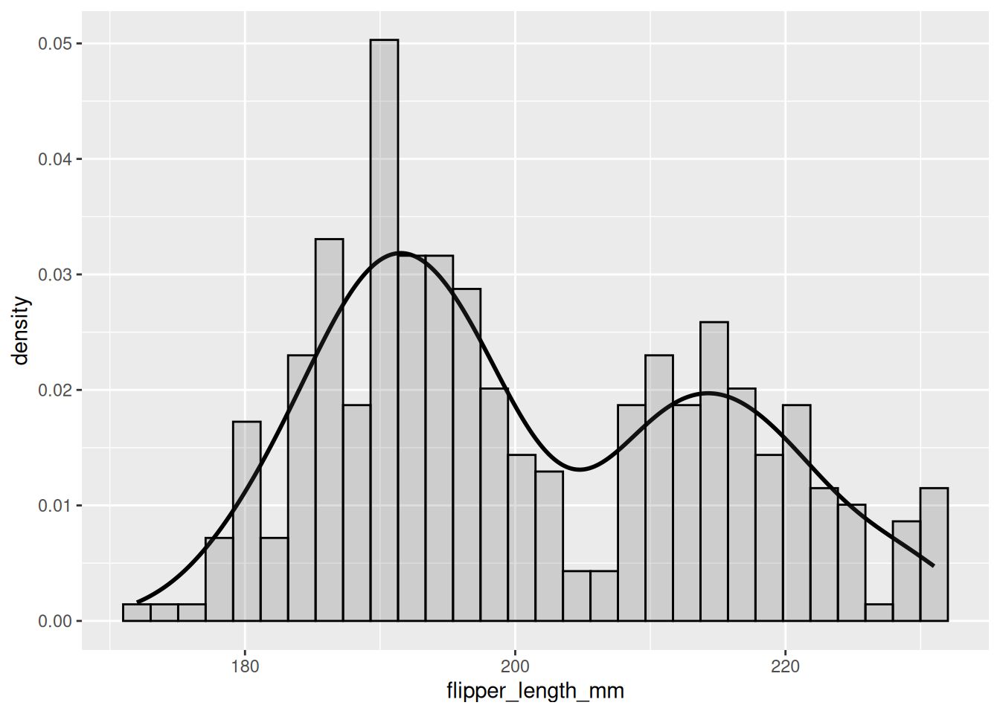

8 One Variable
8.1 One Categorical
Graphing one categorical variable is used to show counts of that variable. This is most commonly used as an initial visualization of your data to check against your statistics.
8.1.1 Bar
One good way of visualizing a single categorical variable is with a bar chart.
Think about the following question:
“How many penguin observations do we have from each island?”
Let’s create a visualization that has a bar for each island, and that bar’s height corresponds to the number of penguins recorded on that island. To do so, we will use geom_bar() which creates a bar graph of counts. Notice that there’s only one variable x. ggplot will automatically count the number in each group to create the y variable (number of penguins on each island).
This way, we can see the distribution of penguins across the three islands. Why island has the most penguins? Which has the least?
8.1.2 Pie
Another option when dealing with one categorical variables is a pie chart. However, pie charts have a tendency to misrepresent data, so I don’t recommend using them. Also, there is no geom in ggplot specifically for a pie chart, so the are also complicated to make! We won’t use them in this class, so you do not have to worry about understanding this code. You may, unfortunately, find yourself working with someone who wants to use a pie chart. I include this code here so you have a template for those scenarios.
penguins %>%
ggplot(aes(x = 1,
fill = species)) +
geom_bar() +
coord_polar("y", start = 0)
More information on why it is recommended to avoid using pie charts can be found here (stop before the “Alternatives” section).
When you are creating a visualization to communicate something about a single categorical variable, you can also use a table instead of a graph.
8.2 One Continuous
Looking at distributions
Being able to understand and characterize distributions is an integral part of the Social/Data Scientist’s toolbox. When you want to know more about the distribution of a particular continuous variable in your dataset, you have a few options available to you.
8.2.1 Histogram
One of the most powerful tools you have for examining distributions is the histogram. In a histogram, values of the variable of interest are separated into different bins on the x-axis. It’s kind of like a bar graph, except the x-axis is separated into arbitrary bins of different sizes (like 1 or 10) instead of discrete categories. So, for example, all penguins with a flipper length of 190 to 200 mm might be in the same bin.
As in the bar graph above, the y-axis of a histogram will most often represent the frequency or count of some value or range of values in the distribution.
penguins %>%
ggplot(aes(x = flipper_length_mm)) +
geom_histogram()
#> `stat_bin()` using `bins = 30`. Pick better value
#> `binwidth`.
In the histogram above, the height of the bars does not correspond to how long a penguin’s flipper was, but rather the number of penguins in this sample with flipper lengths of a particular range/value. For example, it looks like ~28 penguins in this sample had flipper lengths around 190mm.
It is a little difficult to tell the difference between each individual bar though. Giving them an outline would help with this tremendously. You can do this with the color aesthetic. Remember, ‘color’ often refers to the outline/outside, while ‘fill’ often refers to the inside.
penguins %>%
ggplot(aes(x = flipper_length_mm)) +
geom_histogram(color = 'black')
#> `stat_bin()` using `bins = 30`. Pick better value
#> `binwidth`.
8.2.1.1 Bins
You may have noticed a weird message coming out with the histograms so far:
stat_bin() using bins = 30. Pick better value with binwidth.
“bins” refers to the actual number of bins (bars) in your histogram. “binwidth” refers to the width of each bin (bar), in other words how many units in x wide each bin (bar) is. Setting a value for “binwidth” will override the number of “bins”, which is why R is suggesting you change that value.
In a histogram, the difference of binwidth size can significantly impact how your graph looks. This, in turn, will influence what kind of impressions and inferences you make. For this reason it is very important to explore different bin settings and verify whether the patterns you notice are truly a feature of your data or just an artifact of your bin settings!
Consider the example below:
penguins %>%
ggplot(aes(x = flipper_length_mm)) +
geom_histogram(color = 'black',
bins = 5)
penguins %>%
ggplot(aes(x = flipper_length_mm)) +
geom_histogram(color = 'black',
bins = 15)
In the first histogram you would probably say this is a unimodal distribution (one peak) with most of the flipper lengths around 190mm (+/- a few). However, when looking at the second histogram, you would probably say this distribution looks more bimodal (two peaks), with one cluster around 190mm and another around 210mm. The same data, visualized using the same type of graph, but two different stories based on choices that you made. You have to be very careful to make sure you are telling the data’s story, not your story! In this case, it would probably be better to use a smaller bin size, to show that there is a dip in the middle of the distribution.
8.2.2 Density
density plots, in short, are a smoothed histogram. If you are particularly stats-minded and want further information, you click below for some further info.
Density plots show probability density (not actual probability!) on the y-axis. What does that mean exactly? Well, it is a little complicated. In short, a continuous curve (aka kernel) is fit to each individual data point. All the curves from each individual data point are summed and that forms the curve fit by the density plot or the whole dataset. For those interested in more info, check here for a fairly approachable explanation.
Use geom_density() for a density plot.
penguins %>%
ggplot(aes(x = flipper_length_mm)) +
geom_density()
To better understand the density plot, it helps to see how it overlays the histogram:
penguins %>%
ggplot(aes(x = flipper_length_mm)) +
geom_density(size = 1)+
geom_histogram(aes(y=..density..), color="black", alpha=0.2)
You can see that, by smoothing, density plots obscure some of the noisiness (variability) in your data.